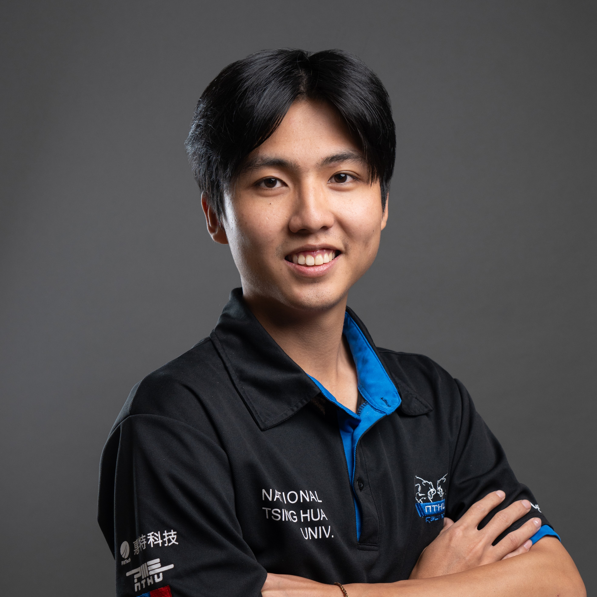
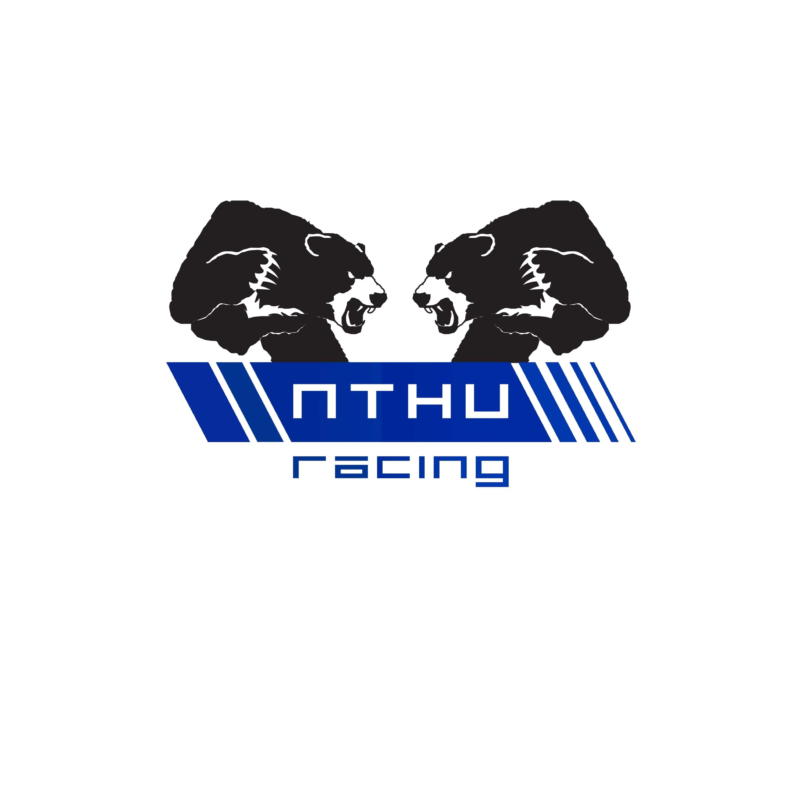

|
Cheng Han Yu Mechanical engineering graduate with 4 years of hands-on experience in Formula Student, specializing in suspension design, vehicle dynamics, and project leadership. As the 2024 team captain of NTHU Racing, I led R&D projects focusing on lightweight carbon fiber components and advanced vehicle control systems, including Taiwan’s first student-developed carbon fiber wheels. With a passion for innovation, I’ve successfully secured partnerships with over 90 international companies, enhancing the team’s technical capabilities. Through international competitions in Germany, Czech Republic, and Taiwan, I’ve collaborated with global talents, gaining exposure to cutting-edge automotive technologies. I am driven by a desire to apply my skills in diverse mechanical engineering fields, including automotive, robotics, and aerospace. |
 |
{kind=link}
Professional Experience |
|  |
Team Leader, NTHURacing TH08,2023/09 ~ 2024/08
Leader of Suspension, NTHURacing TH07,2022/09 ~ 2023/08
Suspension Engineer, NTHURacing TH05 / TH06,2020/10 ~ 2022/08
|
ResearchI'm specailized in mechanical design, control system, vehicle dynamics, robotics and utilized my skills in various project. |

|
Nonlinearity Modification of CMOS-MEMS Resonators with Stress Concentration Structures
Cheng-Han Yu, Zhi-Qiang Lee, Meng-Hsuan Tien, Ming-Huang Li*, ICSS, 2024 project page / video / arXiv Experimental study on modifying the geometric nonlinearity of micromechanical beam structures using stress concentration designs. Two types of CMOS-MEMS resonators, the cantilever and the fixed-fixed beam, were chosen for this study. |
ResearchI'm specailized in mechanical design, control system, vehicle dynamics, robotics and utilized my skills in various project. |
|
|
Nonlinearity Modification of CMOS-MEMS Resonators with Stress Concentration Structures
Cheng-Han Yu, Zhi-Qiang Lee, Meng-Hsuan Tien, Ming-Huang Li*, ICSS, 2024 project page / video / arXiv Experimental study on modifying the geometric nonlinearity of micromechanical beam structures using stress concentration designs. Two types of CMOS-MEMS resonators, the cantilever and the fixed-fixed beam, were chosen for this study. |
Miscellanea |
|
Thanks for Jon Barron for this invaluable web source source code. Do not scrape the HTML from this page itself, as it includes analytics tags that you do not want on your own website — use the github code instead. |